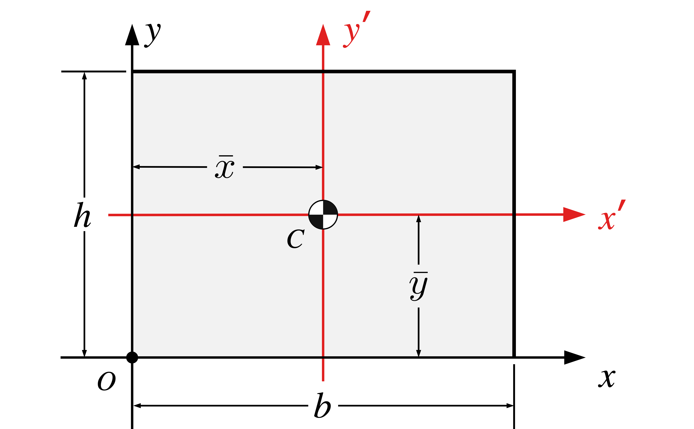
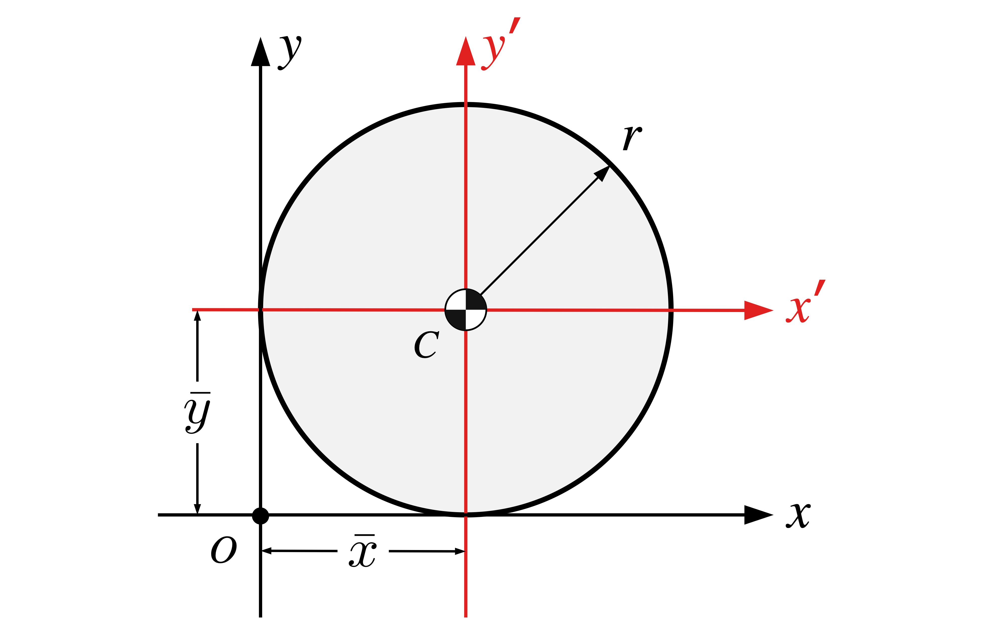
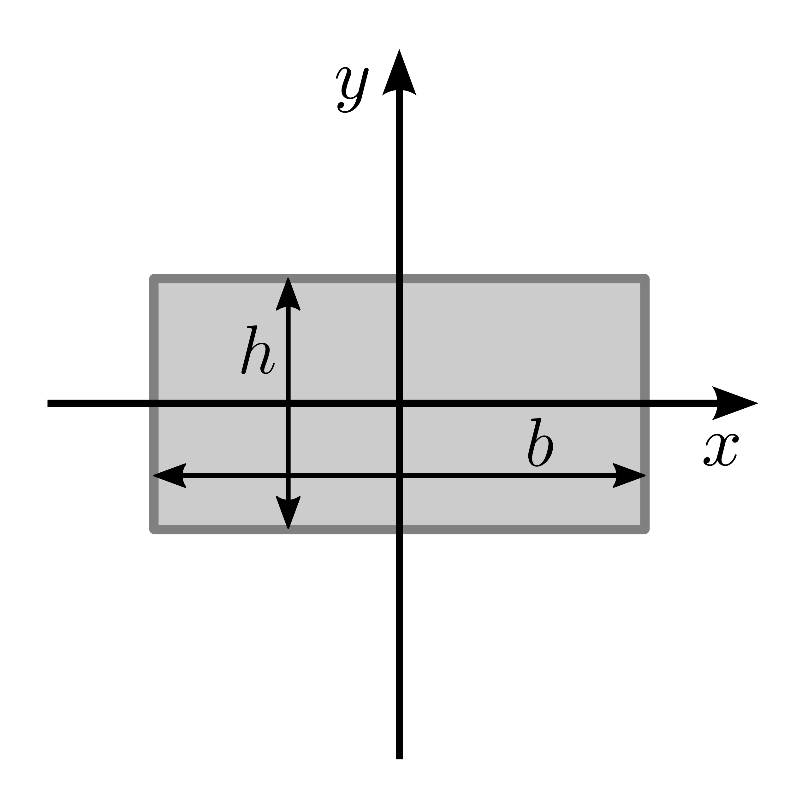
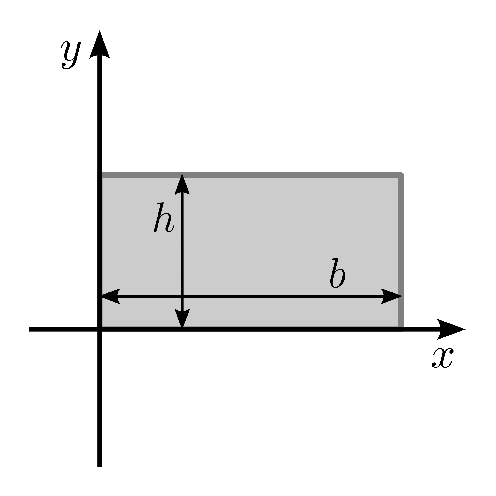
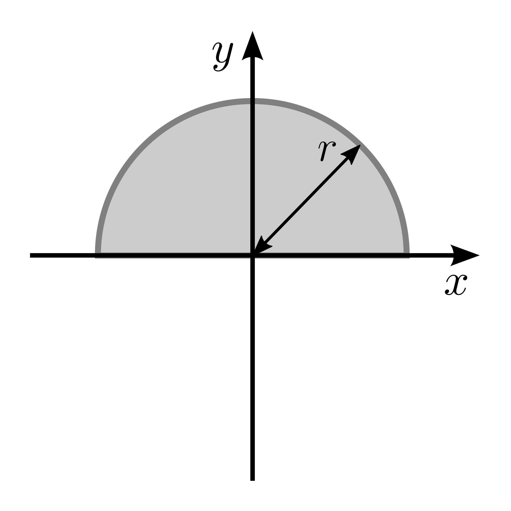

Applied Mechanics Formulae
Linear Motion
\[ \vec{v} = \vec{u} + \vec{a}t \]
\[ \vec{s} = \frac{\vec{u}+\vec{v}}{2}t \]
\[ \vec{s} = \vec{u}t + \frac{1}{2}\vec{a}t^2 \]
\[ \vec{v}^2 = \vec{u}^2 + 2\vec{a} \cdot \vec{s} \]
where:
- \(\vec{u}\): Initial velocity
- \(\vec{v}\): Final velocity
- \(\vec{s}\): Displacement
- \(\vec{a}\): Acceleration
- \(t\): Time
Angular Motion
\[ \omega_2 = \omega_1 \mp \alpha t \]
\[ \theta = \frac{\omega_1+\omega_2}{2}t \]
\[ \theta = \omega_1 t \mp \frac{1}{2}\alpha t^2 \]
\[ \omega_2^2 = \omega_1^2 \mp 2\alpha \theta \]
where:
\(\omega_1\): Initial angular velocity (rad/s)
\(\omega_2\): Final angular velocity (rad/s)
\(\theta\) Angular displacement (rad)
\(\alpha\): Angular acceleration (rad/s2)
\(t\): Time (s)
Relation Between Linear and Angular Motion
The relationship between linear and angular motion is described by the following equations:
\(s = r \theta\) (linear displacement \(s\) and angular displacement \(\theta\)).
\(v = r \omega\) (linear velocity \(v\) and angular velocity \(\omega\)),
\(a = r \alpha\) (linear acceleration \(a\) and angular acceleration \(\alpha\)),
Variables
\(v\): Linear velocity, the rate of change of linear displacement \((v = \frac{ds}{dt})\).
\(a\): Linear acceleration, the rate of change of linear velocity \((a = \frac{dv}{dt})\).
\(s\): Linear displacement, the distance moved along the circular path.
\(r\): Radius of the circular path.
\(\omega\): Angular velocity, the rate of change of angular displacement \((\omega = \frac{d\theta}{dt})\).
\(\alpha\): Angular acceleration, the rate of change of angular velocity \((\alpha = \frac{d\omega}{dt})\).
\(\theta\): Angular displacement, the angle swept by the radius in radians.
Centre of Gravity & Centroid
\[ \bar{x} = \frac{ \sum Moments\ of\ Weights}{\sum Weights} \qquad \bar{y} = \frac{ \sum Moments\ of\ Weights}{\sum Weights} \tag{1}\]
\[ \bar{x} = \frac{ \sum {\bar{x}_i}\ A_i}{\sum A_i} \qquad \bar{y} = \frac{ \sum {\bar{y}_i}\ A_i}{\sum A_i} \tag{2}\]
| Shape | Area | \(\bar{x}\) | \(\bar{y}\) |
|---|---|---|---|
|  | \(A = b h\) | \(b/2\) | \(h/2\) |
 |
\(\dfrac{bh}{2}\) | \(b/3\) | \(h/3\) |
 |
\(\dfrac{(a+b) h}{2}\) | \(\dfrac{a^2 +ab + b^2}{3 (a+b)}\) | \(\dfrac{h(2a+b)}{3(a+b)}\) |
|  | \(\pi r^2\) | \(r\) | \(r\) |
 |
\(\dfrac{\pi r^2}{2}\) | \(r\) | \(\dfrac{4 r}{3 \pi}\) |
| \(\dfrac{\pi r^2}{4}\) | \(\dfrac{4 r}{3 \pi}\) | \(\dfrac{4 r}{3 \pi}\) |
Second Moments of Common Shapes
| Shape | Second moment (\(I_x\)) | Second moment (\(I_y\)) |
|---|---|---|
|  | \(I_x = \frac{1}{12} b h^3\) | \(I_y = \frac{1}{12} b^3 h\) |
|  | \(I_x = \frac{1}{3} b h^3\) | \(I_y = \frac{1}{3} b^3 h\) |
| \(I_x = \frac{\pi}{4} r^4\) | \(I_y = \frac{\pi}{4} r^4\) | |
| \(I_x = \frac{\pi}{4} (r_2^4-r_1^4)\) | \(I_y = \frac{\pi}{4} (r_2^4-r_1^4)\) | |
|  | \(I_x = \frac{\pi}{8} r^4\) | \(I_y = \frac{\pi}{8} r^4\) |
 |
\(I_x = \frac{\pi}{16} r^4\) | \(I_y = \frac{\pi}{16} r^4\) |
 |
\(I_x = \frac{1}{12} b h^3\) | |
 |
\(I_x = \frac{1}{36} b h^3\) |